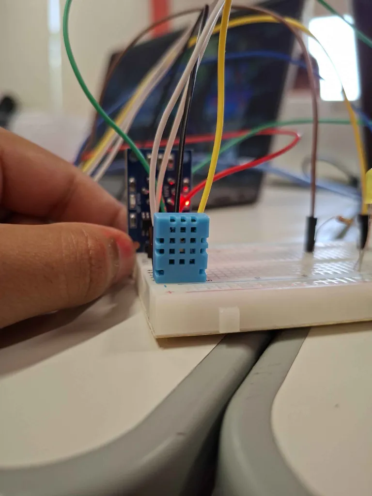
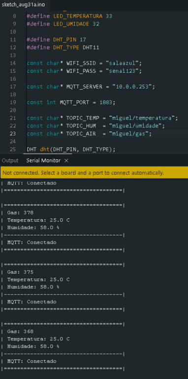
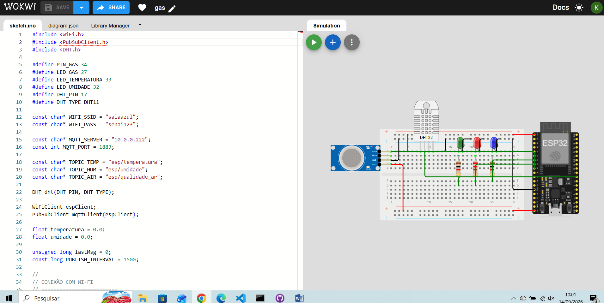

O que foi feito
A ideia do projeto é: criar uma estação que fica monitorando o ambiente o tempo todo. Usamos um ESP32 para ler temperatura, umidade e qualidade do ar. Esses dados saem do mundo físico e vão direto para uma página web, em tempo real.
A ideia do projeto é: criar uma estação que fica monitorando o ambiente o tempo todo. Usamos um ESP32 para ler temperatura, umidade e qualidade do ar. Esses dados saem do mundo físico e vão direto para uma página web, em tempo real.
O projeto foi montado em cima de um ESP32, que é o cérebro do sistema. Dois sensores principais foram conectados:
Três LEDs de alerta foram colocados, Cada um acende conforme algum valor passa do limite definido, tais como:
Dessa forma nos é alertado quando algo incomum acontecer

Nossa montagem do hardware
O ESP32 se conecta no Wi-Fi e publica as leituras a cada 3 segundos no broker MQTT (Mosquitto). Usamos três tópicos:
Do outro lado, a página web se conecta no mesmo broker pela porta de WebSockets (9001) usando a biblioteca Paho MQTT. Quando chega uma mensagem nova, os cartões da dashboard atualizam na hora.
É uma simples ponte entre o físico e o digital que funciona em tempo real

Como os dados fluem do sensort até a tela
A interface tem duas páginas: esta de “Sobre” e a Dashboard Ao Vivo. No Dashboard você vê os três valores atualizando em tempo real, com indicador de conexão (conectado ou desconectado) e um banner na parte de baixo com o nome do grupo.
Também guardamos no localStorage a senha que o professor passou para o grupo.

Woke funcionando
A gente juntou sensores, ESP32, MQTT e uma página web simples para criar um monitoramento ambiental de ponta a ponta. Funciona, é rápido de entender e mostra bem o que a Internet das Coisas consegue fazer no dia a dia.